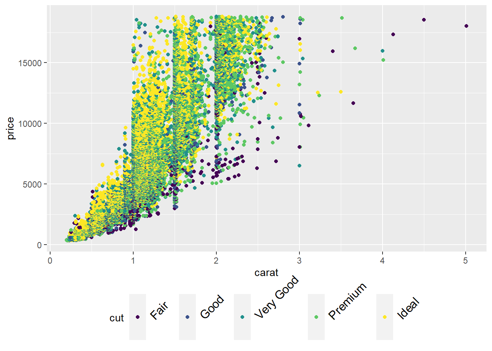

RMarkdown Cookbook
2020-08-12
- 使用 RMarkdown 的
child参数，进行文档拼接。 - 这样拼接以后的笔记方便复习。
- 相关问题提交到 Issue
1 Fenced code blocks
参考 https://github.com/carwin/markdown-styleguide
```
- This list item contains a fenced code block.
- Let's show how it might interact with a list.
```
.code-example {
property: value;
}
```
There is a newline above this paragraph because it is both the end of a
list and because it follows a fenced code block.
```2 display chunk
参考 https://github.com/yihui/knitr-examples/blob/master/065-rmd-chunk.Rmd
Sometimes we do not want to evaluate a chunk, and we just want to include a chunk literally, e.g. when writing tutorials. The R code chunks in these examples are still identified by knitr. If we do not want to evaluate the code at all, there is another approach, which is to break the chunk syntax by adding an empty string as inline R code.
也就是说，在```{r}后面增加''即可。
```{r eval=TRUE}
n = 10
rnorm(x)
```
Figure 2.1: 如果不缩进的话，目录会产生问题。
没有变成 chunk 是因为没有缩进。
it is indented by 4 spaces because we want to show it in a preformatted block in the HTML output
```{r eval=TRUE}
n = 10
rnorm(x)
```这就是 Zero Width Space 也是一种方法，一般不容易手动加入。
要注意缩进。

Figure 2.2: 否则 RStudio IDE 会错误识别。
或者存到文档里面，进行 read
参考 [rmd-template]，并且需要注意加上comment=""，方便复制。


5 HTML Tips
5.1 Skip a line
A first sentence
<br><br><br><br>
A seconde sentenceA first sentence
A seconde sentence
5.2 Center an image
<center>

</center>只需要略懂<>标记语言。
5.3 White space around img

fig.asp=5 还不懂。
5.5 figures in columns
```{r out.width=c('25%', '25%', '25%', '25%'), fig.show='hold'}
library(magrittr)
boxplot(1:10)
plot(rnorm(10))
plot(rnorm(10))
plot(rnorm(10))
```


5.6 Several columns
Since R Markdown use the bootstrap framework under the hood. It is possible to benefit its powerful grid system. Basically, you can consider that your row is divided in 12 subunits of same width. You can then choose to use only a few of this subunits.
Here, I use 3 subunits of size 4 (4x3=12). The last column is used for a plot. You can read more about the grid system here. I got this result showing the following code in my R Markdown document.
{r, message=FALSE, echo=FALSE} ggplot( mtcars, aes(x=mpg)) + geom_histogram(fill="skyblue", alpha=0.5) + theme_minimal()
<div class = "row">
<div class = "col-md-4">
<br><br>Since R Markdown use the [bootstrap framework](https://getbootstrap.com/docs/4.0/layout/grid/) under the hood. It is possible to benefit its powerful grid system. Basically, you can consider that your row is divided in 12 subunits of same width. You can then choose to use only a few of this subunits.
</div>
<div class = "col-md-4">
<br><br>Here, I use 3 subunits of size 4 (4x3=12). The last column is used for a plot. You can read more about the grid system [here](bootstrap grid system). I got this result showing the following code in my R Markdown document.
</div>
<div class = "col-md-4">
``{r, message=FALSE, echo=FALSE}
ggplot( mtcars, aes(x=mpg)) + geom_histogram(fill="skyblue", alpha=0.5) + theme_minimal()
``
</div>
</div>5.7 Hide code
output:
html_document:
code_folding: "hide"这算是给一个选择。
5.8 Internal link
6 公式加上编号
参考 https://github.com/nealxun/ForecastingPrinciplePractices/blob/master/11-advanced.Rmd
\begin{align}
\label{var1a}
y_{1,t} &= c_1+\phi _{11,1}y_{1,t-1}+\phi _{12,1}y_{2,t-1}+e_{1,t} (\#eq:var1a)\\
y_{2,t} &= c_2+\phi _{21,1}y_{1,t-1}+\phi _{22,1}y_{2,t-1}+e_{2,t} (\#eq:var1b)
\end{align}\[\begin{align} \label{var1a} y_{1,t} &= c_1+\phi _{11,1}y_{1,t-1}+\phi _{12,1}y_{2,t-1}+e_{1,t} \tag{6.1}\\ y_{2,t} &= c_2+\phi _{21,1}y_{1,t-1}+\phi _{22,1}y_{2,t-1}+e_{2,t} \tag{6.2} \end{align}\]
就是必须这样写
而是要多加上$$ 别加，然后下面可以引用公式\begin{align}和\end{align}
\@ref(eq:var1a) 和 \@ref(eq:var1b)7 让 output 保存到特定的文件夹
参考 https://bookdown.org/yihui/rmarkdown/rmarkdown-site.html
比如在 analysis 文件夹中产生两个文件夹
analysis/index.Rmd，这是空文件。index.Rmd先 knit 得到output/index.html。analysis/_site.yml，内容为output_dir: ../output
On branch master
Your branch is up to date with 'origin/master'.
Untracked files:
(use "git add <file>..." to include in what will be committed)
analysis/_site.yml
analysis/index.Rmd
analysis/test-output-dir.Rmd
output/test-output-dir.md
nothing added to commit but untracked files present (use "git add" to track)以 analysis/test-output-dir.Rmd 为例，当通过快捷键 Ctrl + Shift + K render 文件时，产出 output/test-output-dir.md 的位置在设定的路径output。
8 类似 nbdev 写函数功能
Actually, I find ‘dot’ is one of the engines which ‘knitr’ support.
library(magrittr)
#> Warning: 程辑包'magrittr'是用R版本3.6.1 来建造的
names(knitr::knit_engines$get()) %>%
sort()
#> [1] "asis" "asy" "awk" "bash" "block" "block2"
#> [7] "c" "cat" "coffee" "css" "dot" "fortran"
#> [13] "fortran95" "gawk" "go" "groovy" "haskell" "highlight"
#> [19] "js" "julia" "lein" "mysql" "node" "octave"
#> [25] "perl" "psql" "python" "Rcpp" "Rscript" "ruby"
#> [31] "sas" "sass" "scala" "scss" "sed" "sh"
#> [37] "sql" "stan" "stata" "tikz" "zsh"Created on 2020-02-02 by the reprex package (v0.3.0)
However, I don’t find any source to run dot just like python, Julia. I think there is another way to do it. Use the chunk to preview dot code and use another r chunk to display the dot output.
## [1] "```{cat, engine.opts=list(file = 'sample.dot')}"
## [2] "digraph course {"
## [3] "rankdir = LR"
## [4] "node [shape = box, style=filled]"
## [5] "layout = dot"
## [6] "compound =true"
## [7] "#color = crimson"
## [8] ""
## [9] "a -> b"
## [10] "c -> d"
## [11] "}"
## [12] "```"
## [13] ""
## [14] "```{r}"
## [15] "DiagrammeR::grViz(\"sample.dot\")"
## [16] "```"The temporal file "sample.dot" is optional, you can use a temp file by fs::path_temp.
Here, ‘cat’ is also one of the engines ‘knitr’ supports. Here are the notes to introduce it.
https://bookdown.org/yihui/rmarkdown-cookbook/eng-cat.html
以下是实现效果。
9 spin_child
knitr::spin_child("analysis.R")
10 pretty print
参考 https://stackoverflow.com/questions/24524594/pretty-print-sql-code-from-separate-file-with-knitr
## ```sql
## `r xfun::file_string('mycode.sql')`
## ```11 engine.path
cat("```{python, engine.path = 'D:\\install\\miniconda\\Scripts\\ipython3.exe'}
import sys
print(sys.version)
```")## ```{python, engine.path = 'D:\install\miniconda\Scripts\ipython3.exe'}
## import sys
## print(sys.version)
## ```直接找到 exe。
'D:\\install\\miniconda\\Scripts\\ipython3.exe' 注意要双逸出符号
12 direct use dot
I find the solution on a yihui’s post. See the example ‘dot.Rmd’ host on GitHub.
Here, the code is written in RMarkdown.
The output is here https://github.com/yihui/knitr-examples/blob/master/057-engine-dot.md
因此我回复了这个问题 https://community.rstudio.com/t/dot-in-rmarkdown/51311/4
13 R 代码模块引用
参考 http://stackoverflow.com/q/14802183/559676 源代码参考 https://github.com/yihui/knitr-examples/blob/master/083-ggplot2-reference.Rmd
Now we can use <<>> to reference it.
library(ggplot2)
qplot(carat, price, data=diamonds, color=cut)+
theme (legend.text = element_text(size = 12, angle=45))+
theme (legend.position = "bottom")
目前测试，只支持 ggplot2
14 Caption
14.1 caption 默认在下

Figure 14.1: 图片的 caption
Figure 14.2: 图片的 caption
Figure 14.3: 图片的 caption
14.2 caption 不重复
fig.show = "hold"
```{r, fig.cap='图片的 caption', fig.show = "hold"}
knitr::include_graphics(rep("../figure/bug-toc.png", 3))
```Figure 14.4: 图片的 caption
16 Add Toc Github Document
16.1 Introduction
参考 RStudio Community，替换成 md_document
---
output:
md_document:
df_print: tibble
toc: true
toc_depth: 2
bibliography: add.bib
---
```
# As Is
## Introduction
参考 [bookdown](https://bookdown.org/yihui/rmarkdown/r-code.html)
>
`results`: When set to `'hide'`, text output will be hidden; when set to `'asis'`, text output is written “as-is”, e.g., you can write out raw Markdown text from R code (like `cat('**Markdown** is cool.\n'))`. By default, text output will be wrapped in verbatim elements (typically plain code blocks).
```r
suppressMessages(library(tidyverse))
text <- "1. 测试\n"
rep(text,2) %>%
str_flatten("") %>%
cat
```
1. 测试
1. 测试
# Embed
参考 [Stack Overflow](https://stackoverflow.com/a/9976309/8625228) 进行设置宽度，但是未成功。
<script>
function resizeIframe(obj) {
obj.style.height = obj.contentWindow.document.body.scrollHeight + 'px';
}
</script>
<iframe src="https://jiaxiangli.netlify.com/" frameborder="0" scrolling="yes" onload="resizeIframe(this)" />
<iframe src="https://jiaxiangli.netlify.com/"
onload="this.style.height=this.contentDocument.body.scrollHeight +'px';">
</iframe>
`<iframe src="https://www.datavizforall.org/embed/index.html"></iframe>`
<iframe src="https://jiaxiangli.netlify.com/"></iframe>
https://datavizforall.org/embed.html
<iframe name="Jiaxiang Li" src="https://jiaxiangli.netlify.com/about/" style='height: 100%; width: 100%;' frameborder="0" scrolling="yes" id="iframe">...</iframe>
注意这里不插入
```
...</iframe>
```
那么下面的文字是不能显示的。
# Gitbook
有空研究下 gitbook 的参数
```r
?bookdown:::gitbook
```
`split_by`可以分开，不然一个 html 太大了。
`split_bib`也要分开，不然太长了。
# Iframe Bugs
一般博客、静态网页，想要插入一个静态网页，最好的方法是使用 JavaScript 的`iframe`，但是我目前在 blogdown 的配置下出现问题，主要是因为尺寸太小。

可以在 `iframe` 的基础上改变参数，如
```javascript
<iframe src="https://jiaxiangbu.github.io/r_code/analysis/import-data-learning-notes.html" width="100%" height="800px"></iframe>
```
这里需要注意设定的参数是
1. `width="100%"`
1. `height="800px"`
可以替代的 R 代码为
```rmarkdown
## ```{r,out.width='100%', out.extra='style="display:block;"'}
## knitr::include_url('https://jiaxiangbu.github.io/tutoring/jinxiaosong/t-sne-theory.html', height = '800px')
## ```
```
这里故意加入一个参数 `out.extra='style="display:block;"'` 是为了避免报错。
详细见
1. https://github.com/yihui/knitr/commit/7ce809e0fbc62cd390b5936286e79e602c60f2bc
1. https://github.com/yihui/knitr/issues/1691
1. https://github.com/rstudio/blogdown/issues/32#issuecomment-275032071
1. https://stackoverflow.com/questions/55941316/knitrinclude-url-ignored-in-output
```
out.extra NULL A character string of extra options for figures to be passed to LaTex or HTML.
```
[www.rstudio.com](https://www.rstudio.com/wp-content/uploads/2015/03/rmarkdown-reference.pdf)
否则会产生报错
```r
Error in enc2utf8(x) : argument is not a character vector
```
最后产生的效果是

# Iframe Margin
跟随 [iframe-bugs](iframe-bugs) 的问题，目前需要全页面的展示插入的网站，一般考虑两个参数
```
<iframe src="https://jiaxiangbu.github.io/r_code/analysis/import-data-learning-notes.html" width="100%" height="800px" style="position:absolute; left:0px"></iframe>
```
1. 调整 `style="position:absolute;"`参数，参考[Stack Overflow](https://stackoverflow.com/a/37044377/8625228)
1. 调整 `left` 参数，参考[Stack Overflow](https://stackoverflow.com/questions/25651894/move-iframe-to-the-right-or-shift-content-inside-iframe-to-the-left)
# Kable Add Title
```r
library(knitr)
```
```r
kable(head(iris), format = "html", caption = "Title of the table")
```
<table>
<caption>(\#tab:unnamed-chunk-64)Title of the table</caption>
<thead>
<tr>
<th style="text-align:right;"> Sepal.Length </th>
<th style="text-align:right;"> Sepal.Width </th>
<th style="text-align:right;"> Petal.Length </th>
<th style="text-align:right;"> Petal.Width </th>
<th style="text-align:left;"> Species </th>
</tr>
</thead>
<tbody>
<tr>
<td style="text-align:right;"> 5.1 </td>
<td style="text-align:right;"> 3.5 </td>
<td style="text-align:right;"> 1.4 </td>
<td style="text-align:right;"> 0.2 </td>
<td style="text-align:left;"> setosa </td>
</tr>
<tr>
<td style="text-align:right;"> 4.9 </td>
<td style="text-align:right;"> 3.0 </td>
<td style="text-align:right;"> 1.4 </td>
<td style="text-align:right;"> 0.2 </td>
<td style="text-align:left;"> setosa </td>
</tr>
<tr>
<td style="text-align:right;"> 4.7 </td>
<td style="text-align:right;"> 3.2 </td>
<td style="text-align:right;"> 1.3 </td>
<td style="text-align:right;"> 0.2 </td>
<td style="text-align:left;"> setosa </td>
</tr>
<tr>
<td style="text-align:right;"> 4.6 </td>
<td style="text-align:right;"> 3.1 </td>
<td style="text-align:right;"> 1.5 </td>
<td style="text-align:right;"> 0.2 </td>
<td style="text-align:left;"> setosa </td>
</tr>
<tr>
<td style="text-align:right;"> 5.0 </td>
<td style="text-align:right;"> 3.6 </td>
<td style="text-align:right;"> 1.4 </td>
<td style="text-align:right;"> 0.2 </td>
<td style="text-align:left;"> setosa </td>
</tr>
<tr>
<td style="text-align:right;"> 5.4 </td>
<td style="text-align:right;"> 3.9 </td>
<td style="text-align:right;"> 1.7 </td>
<td style="text-align:right;"> 0.4 </td>
<td style="text-align:left;"> setosa </td>
</tr>
</tbody>
</table>
```r
# R Markdown/Github Markdown tables
kable(head(mtcars[, 1:5]), format = "markdown")
```
| | mpg| cyl| disp| hp| drat|
|:-----------------|----:|---:|----:|---:|----:|
|Mazda RX4 | 21.0| 6| 160| 110| 3.90|
|Mazda RX4 Wag | 21.0| 6| 160| 110| 3.90|
|Datsun 710 | 22.8| 4| 108| 93| 3.85|
|Hornet 4 Drive | 21.4| 6| 258| 110| 3.08|
|Hornet Sportabout | 18.7| 8| 360| 175| 3.15|
|Valiant | 18.1| 6| 225| 105| 2.76|
# Kable
```
---
output:
github_document:
df_print: kable
---
```
方便。
# License
What license are you using for your code? See [choosealicense.com][choose] for
help deciding. It's a convention to save a file `LICENSE` in the root of your
Git repo that contains the license text.
What license are you using for the written content on your site? It is
traditional to choose a [Creative Commons][cc] license for this type of content.
[choose]: http://choosealicense.com/
[cc]: https://creativecommons.org/choose/
How should others cite your work? It's a convention to save a file `CITATION`
in the root of your Git repo that contains the citation information.
# Literate Prog
>
... considering programs to be works of literature
[@Knuth1984]
>
Let us change our traditional attitude to the construction of programs: Instead of imagining that our main task is to instruct a computer what to do, let us concentrate rather on explaining to human beings what we want a computer to do.
[@Knuth1984]
文学编程 (Literate Programming) 虽然还是不是特别清楚，但不是 cmd line，而是作为解释性的叙述。
>
他访问过很多成名的程序员。他对系统的阅读 code 持否定意见。我对「系统的」阅读的定义是，本身没有任何目的，希望像消费一本小说那样消费一个 code base，期待自动的获得知识。虽然我花过很多时间读 Linux kernel 和 Lua，但是每次读一定要给自己定一些探索小问题的目标。我觉得 literate program 并不是为了工程上的，以扩展原有系统为具体目的的阅读代码准备的，而是希望 code 成为能够被「系统化」（文学化）阅读的东西。这个我持否定态度。
[冯东](https://www.zhihu.com/question/26978956/answer/73576593)
>
这听起来就像在拿着剪刀浆糊在弄程序。虽然我个人还真有点喜欢这一套，但是，这种东西实际上会造成两方面的问题：代码不好维护；代码容易写的很ad hoc(特别的)。
因为这种写软件的方法是自底而上的办法，中间歪一点最终就成比萨斜塔了。
这个也是我的想法。
# Load More Weakness
```
Attaching package: 'xfun'
The following objects are masked from 'package:base':
attr, isFALSE
Attaching package: 'glue'
The following object is masked from 'package:dplyr':
collapse
Error in base::attr(..., exact = TRUE) :
��ʽ����"exact"�ж����֮���Ӧ��ʵ�ʲ���
Calls: sourceWithProgress -> attr
ִֹͣ��
```
# No Space Left On Device
```
> blogdown:::serve_site()
Total in 4326 ms
Error: Error copying static files: write /Users/vija/Downloads/work/blog_181126/public/about_files/grViz-binding/lib/mermaid/dist/mermaid.css: no space left on device
To stop the server, run servr::daemon_stop("140572298819464") or restart your R session
Serving the directory /Users/vija/Downloads/work/blog_181126 at http://127.0.0.1:4321
```
「No space left on device」的意思是没有剩余空间了。
# Pandoc Args
```
>pandoc --help
pandoc [OPTIONS] [FILES]
-f FORMAT, -r FORMAT --from=FORMAT, --read=FORMAT
-t FORMAT, -w FORMAT --to=FORMAT, --write=FORMAT
-o FILENAME --output=FILENAME
--data-dir=DIRECTORY
-R --parse-raw
-S --smart
--old-dashes
--base-header-level=NUMBER
--indented-code-classes=STRING
-F PROGRAM --filter=PROGRAM
--normalize
-p --preserve-tabs
--tab-stop=NUMBER
--track-changes=accept|reject|all
--file-scope
--extract-media=PATH
-s --standalone
--template=FILENAME
-M KEY[:VALUE] --metadata=KEY[:VALUE]
-V KEY[:VALUE] --variable=KEY[:VALUE]
-D FORMAT --print-default-template=FORMAT
--print-default-data-file=FILE
--dpi=NUMBER
--no-wrap
--wrap=auto|none|preserve
--columns=NUMBER
--toc, --table-of-contents
--toc-depth=NUMBER
--no-highlight
--highlight-style=STYLE
-H FILENAME --include-in-header=FILENAME
-B FILENAME --include-before-body=FILENAME
-A FILENAME --include-after-body=FILENAME
--self-contained
--html-q-tags
--ascii
--reference-links
--reference-location=block|section|document
--atx-headers
--chapters
--top-level-division=section|chapter|part
-N --number-sections
--number-offset=NUMBERS
--no-tex-ligatures
--listings
-i --incremental
--slide-level=NUMBER
--section-divs
--default-image-extension=extension
--email-obfuscation=none|javascript|references
--id-prefix=STRING
-T STRING --title-prefix=STRING
-c URL --css=URL
--reference-odt=FILENAME
--reference-docx=FILENAME
--epub-stylesheet=FILENAME
--epub-cover-image=FILENAME
--epub-metadata=FILENAME
--epub-embed-font=FILE
--epub-chapter-level=NUMBER
--latex-engine=PROGRAM
--latex-engine-opt=STRING
--bibliography=FILE
--csl=FILE
--citation-abbreviations=FILE
--natbib
--biblatex
-m[URL] --latexmathml[=URL], --asciimathml[=URL]
--mathml[=URL]
--mimetex[=URL]
--webtex[=URL]
--jsmath[=URL]
--mathjax[=URL]
--katex[=URL]
--katex-stylesheet=URL
--gladtex
--trace
--dump-args
--ignore-args
--verbose
--bash-completion
--list-input-formats
--list-output-formats
--list-extensions
--list-highlight-languages
--list-highlight-styles
-v --version
-h --help
```
# Powerpoint
参考 [bookdown](https://bookdown.org/yihui/rmarkdown/powerpoint-presentation.html)
学习做PPT，可以插入模板
todo 如何增加 caption 的序号呢？
字体大小
rmarkdown PowerPoint caption reference
但是复现的时候，非常快，不需要陷入粘贴数据、图片的泥沼。
而且现在生成 ppt 更加稳定了。
multi-rows
https://pandoc.org/MANUAL.html#producing-slide-shows-with-pandoc
fontsize
https://stackoverflow.com/questions/30446905/rmarkdown-font-size-and-header
目前感觉 PPT 做起来还有点吃力，我得快快设置 font size 等
# Rmd Sql
参考[bookdown](https://bookdown.org/yihui/rmarkdown/language-engines.html#sql)
```r
library(DBI)
con <- dbConnect(RSQLite::SQLite(), ":memory:")
dbWriteTable(con, "mtcars", mtcars)
library(glue)
tbl <- "mtcars"
```
```sql
SELECT * FROM `mtcars` where gear IN (3, 4)
```
<div class="knitsql-table">
Table: (\#tab:unnamed-chunk-67)Displaying records 1 - 10
| mpg| cyl| disp| hp| drat| wt| qsec| vs| am| gear| carb|
|----:|---:|-----:|---:|----:|-----:|-----:|--:|--:|----:|----:|
| 21.0| 6| 160.0| 110| 3.90| 2.620| 16.46| 0| 1| 4| 4|
| 21.0| 6| 160.0| 110| 3.90| 2.875| 17.02| 0| 1| 4| 4|
| 22.8| 4| 108.0| 93| 3.85| 2.320| 18.61| 1| 1| 4| 1|
| 21.4| 6| 258.0| 110| 3.08| 3.215| 19.44| 1| 0| 3| 1|
| 18.7| 8| 360.0| 175| 3.15| 3.440| 17.02| 0| 0| 3| 2|
| 18.1| 6| 225.0| 105| 2.76| 3.460| 20.22| 1| 0| 3| 1|
| 14.3| 8| 360.0| 245| 3.21| 3.570| 15.84| 0| 0| 3| 4|
| 24.4| 4| 146.7| 62| 3.69| 3.190| 20.00| 1| 0| 4| 2|
| 22.8| 4| 140.8| 95| 3.92| 3.150| 22.90| 1| 0| 4| 2|
| 19.2| 6| 167.6| 123| 3.92| 3.440| 18.30| 1| 0| 4| 4|
</div>
# Share Bib
# 在同一文件夹中分享 bib
In the `_output.yaml`
```
github_document:
df_print: kable
pandoc_args: ["--bibliography=../add.bib"]
```
In the `_site.yml`，参考 [github](https://github.com/JiaxiangBU/test-workflowr/blob/master/analysis/_site.yml)
```
name: "test-workflowr"
output_dir: ../docs
navbar:
title: "test-workflowr"
left:
- text: Home
href: index.html
- text: About
href: about.html
- text: License
href: license.html
output:
workflowr::wflow_html:
toc: yes
toc_float: yes
theme: cosmo
highlight: textmate
pandoc_args: ["--bibliography=add.bib"]
```
# Stuck In Knitting
>
1. 如果用户留存低，那么首次登录很可能都是新增用户，因此66行为信息都很少，这在之前的样本表的[EDA结果](../rating/submission_view/opd_ppd_66_rating_20190313_wyq.html)中*Missing Data Profile*显示，66行为变量缺失率都很高。
1. 有链接那么就会卡住，换成绝对链接
1. 有英文就卡住，主要是用了`*`表示斜体。
# Text Ref01
See Theorem `\@ref(thm:boring)`
```{theorem, boring}
Here is my theorem.
```
# Text Ref02
一些 comments 一些 comments
```{r 20200401231637-plot, echo=FALSE, fig.cap='一些 comments'}
knitr::include_graphics("figure/IMG_0288.png")
```
# Use Collapse
## Introduction
```r
1 + 1
```
```
## [1] 2
```
```r
1 + 2
```
```
## [1] 3
```
设置 `collapse=TRUE` 后，
```r
1 + 1
## [1] 2
1 + 2
## [1] 3
```
但是在 `workflow` 环境下就失效了，提交了问题 [Github Issue 153](https://github.com/jdblischak/workflowr/issues/153)
```r
library(webshot)
webshot(url = "file:///D:/work/learn_rmd/docs/use-collapse.html", file = 'collapse-fail-workflowr.png')
```
<img src="cookbook_files/figure-html/unnamed-chunk-70-1.png" width="672" />
# Use R Chunk Option Child
参考[R Markdown Cookbook](https://dr-harper.github.io/rmarkdown-cookbook/multi-file-documents.html)
>
With larger R Markdown projects, it can be useful to split the document into smaller files which are easier to handle than a single, massive `'.Rmd` document. Also, we may also have generic components which we wish to use across all of our analyses, and rather than copying and pasting the same code across for each report.
1. 创建各个小的文档
1. 不要重复粘贴代码
这两点深得我心。
>
There is a legacy of using child documents when creating longer documents, as bookdown was only released in 2016. As such, there is some confusion over which should be used when. In general, if you are wishing to reuse a component across multiple documents, it is recommended to use child documents. However, if you are wanting to write a book and split it into multiple files (preferably one per chapter), bookdown provides a lot of extra functionality and is generally preferred.
child 这种方式非常好用，我可以尝试。
以下做测试。
这个问题在 workflowr 是一个问题，但是已经被解决。
https://github.com/jdblischak/workflowr/issues/111
并且，可以利用 here::here 函数
```r,child=here::here("zhenglianhu/06-02-topic-modeling-display.Rmd")
```
# Yaml Load
针对 yaml 的问题，我在[Stack Overflow](https://stackoverflow.com/a/54283191/8625228)写了一个相关答案。
```r
library(yaml)
library(magrittr)
library(readr)
"
---
title: 'This is a title'
output: github_document
---
some content
" %>%
yaml.load()
```
```
## $title
## [1] "This is a title"
##
## $output
## [1] "github_document"
```
```r
text <- "
---
title: 'This is a title'
output: github_document
---
some content
some content: some content
"
library(xfun)
yaml_content <-
read_lines(text,n_max = 5) %>%
yaml.load()
yaml_content
```
```
## $title
## [1] "This is a title"
##
## $output
## [1] "github_document"
```
```r
yaml_content$title
```
```
## [1] "This is a title"
```
1. 处理成 list 格式
1. 忽略非 yaml 字段，如`some content`
但是当正文中含有 key-value pair 时，`yaml.load`会报错，因此需要限制 block 的行数。
```
Error in yaml::yaml.load(.) : Scanner error: mapping values are not allowed in this context at line 18, column 7
```
参考[Stack Overflow](https://stackoverflow.com/a/52174427/8625228)，是因为`line 18`中`remote: Enumerating objects: 28, done.`出现了两个`:`，因此如何避免这种情况呢？选择第二个 `---`前的情况。
# Nested Code Block
```r
xfun::file_string("../template/nested_code_block.Rmd")
```
{r echo=FALSE, results='asis'} gluedown::md_fence( "{r out.width=c(‘25%’, ‘25%’, ‘25%’, ‘25%’), fig.show=‘hold’}
library(magrittr)
boxplot(1:10)
plot(rnorm(10))
plot(rnorm(10))
plot(rnorm(10))
", char = "~", info = "")
# Param Rmd
```r
xfun::file_string("../template/param-rmd.Rmd")
```
github 是一个 minimal example。
参考 jla-data 和
nsaunders
在 yaml 模块，#可以作为评论记号，而不执行。
library(rmarkdown)
suppressMessages(library(tidyverse))
species_list <- iris$Species %>% unique()args(render)未成功。
{r eval=F} library(glue) species_list %>% map(~render(params = list(species = .)), input = 'rmd-template.Rmd', output_format = 'html_document', output_file = glue("{.}.html"), output_dir = '../output', quiet = T, encoding = 'UTF-8' )
```{r eval=F} library(rmarkdown)
flowers <- unique(iris$Species) # setosa, versicolor, virginica - you know them all, don’t you?
for (i in seq_along(flowers)) { myIris <- flowers[i] # my species - to be reused as 1) parameter & 2) file name render(“report-template.Rmd”, # the template params = list(species = myIris), # value of myIris passed to the species parameter output_file = paste(myIris, ‘.pdf’, sep = ’‘), # name of the output file - species name and pdf extension quiet = T, encoding = ’UTF-8’)
错误: Incomplete expression: for (i in seq_along(flowers)) { myIris <- flowers[i] # my species - to be reused as 1) parameter & 2) file name render(“report-template.Rmd”, # the template # params = list(species = myIris), # value of myIris passed to the species parameter # output_file = paste(myIris, ‘.pdf’, sep = ’‘), # name of the output file - species name and pdf extension # quiet = T, encoding = ’UTF-8’)
参考 [rmarkdown](https://rmarkdown.rstudio.com/lesson-6.html)
```{r eval=F}
render("5-parameters.Rmd", params = list(data = "aleutians"))这样就非常方便
我突然想起来，这就是 DataExplorer 的实现方式。 因此只要 base 在 Rmd 模板进行编写就可以了。
还可以 knit with params，有UI 这一步没有问题。
16.2 常见报错
Error: params object already exists in knit environment so can't be overwritten by render params参考 Stack Overflow
因为 params 这个对象该环境中已经有了，我更喜欢这个答案，参考Stack Overflow
{r eval=F} rmarkdown::render("test.Rmd", params = list(name = "Jordan"), envir = new.env() )
> source("R/load.R")
> render("jd-template.Rmd",params = list(name = '同学', email = 'example@example.com'),
+ output_format = 'github_document',output_dir = 'test-person'
+ )
processing file: jd-template.Rmd
|...................... | 33%
inline R code fragments
Quitting from lines 2-86 (jd-template.Rmd)
Error in nchar(input) : invalid multibyte string, element 1需要设置 encoding = 'UTF-8'
# Rmd Template
```r
xfun::file_string("../template/rmd-template.Rmd")
```
suppressMessages(library(tidyverse))
iris %>%
filter(Species == params$species)
# 自定义 comment 的符号
```{r comment=''}
print(1:5)
```
```{r comment='##'}
print(1:5)
```
```r
print(1:5)
```
```
[1] 1 2 3 4 5
```
```r
print(1:5)
```
```
## [1] 1 2 3 4 5
```
这样前面就没有`##`了。
# 写 `@`
`\@LeiLei-Miao` 这样 render 的时候，就不会识别为 bibtex
# markdown 构建 table
```markdown
| | mpg| cyl| disp| hp| drat| wt| qsec| vs| am| gear| carb|
|:-----------------|----:|---:|----:|---:|----:|-----:|-----:|--:|--:|----:|----:|
|Mazda RX4 | 21.0| 6| 160| 110| 3.90| 2.620| 16.46| 0| 1| 4| 4|
|Mazda RX4 Wag | 21.0| 6| 160| 110| 3.90| 2.875| 17.02| 0| 1| 4| 4|
|Datsun 710 | 22.8| 4| 108| 93| 3.85| 2.320| 18.61| 1| 1| 4| 1|
|Hornet 4 Drive | 21.4| 6| 258| 110| 3.08| 3.215| 19.44| 1| 0| 3| 1|
|Hornet Sportabout | 18.7| 8| 360| 175| 3.15| 3.440| 17.02| 0| 0| 3| 2|
|Valiant | 18.1| 6| 225| 105| 2.76| 3.460| 20.22| 1| 0| 3| 1|
```
| | mpg| cyl| disp| hp| drat| wt| qsec| vs| am| gear| carb|
|:-----------------|----:|---:|----:|---:|----:|-----:|-----:|--:|--:|----:|----:|
|Mazda RX4 | 21.0| 6| 160| 110| 3.90| 2.620| 16.46| 0| 1| 4| 4|
|Mazda RX4 Wag | 21.0| 6| 160| 110| 3.90| 2.875| 17.02| 0| 1| 4| 4|
|Datsun 710 | 22.8| 4| 108| 93| 3.85| 2.320| 18.61| 1| 1| 4| 1|
|Hornet 4 Drive | 21.4| 6| 258| 110| 3.08| 3.215| 19.44| 1| 0| 3| 1|
|Hornet Sportabout | 18.7| 8| 360| 175| 3.15| 3.440| 17.02| 0| 0| 3| 2|
|Valiant | 18.1| 6| 225| 105| 2.76| 3.460| 20.22| 1| 0| 3| 1|
# data.frame to markdown table
例如表格
```r
library(magrittr)
df <- mtcars %>% head
df
```
<div class="kable-table">
| | mpg| cyl| disp| hp| drat| wt| qsec| vs| am| gear| carb|
|:-----------------|----:|---:|----:|---:|----:|-----:|-----:|--:|--:|----:|----:|
|Mazda RX4 | 21.0| 6| 160| 110| 3.90| 2.620| 16.46| 0| 1| 4| 4|
|Mazda RX4 Wag | 21.0| 6| 160| 110| 3.90| 2.875| 17.02| 0| 1| 4| 4|
|Datsun 710 | 22.8| 4| 108| 93| 3.85| 2.320| 18.61| 1| 1| 4| 1|
|Hornet 4 Drive | 21.4| 6| 258| 110| 3.08| 3.215| 19.44| 1| 0| 3| 1|
|Hornet Sportabout | 18.7| 8| 360| 175| 3.15| 3.440| 17.02| 0| 0| 3| 2|
|Valiant | 18.1| 6| 225| 105| 2.76| 3.460| 20.22| 1| 0| 3| 1|
</div>
```r
df %>% knitr::kable("markdown")
```
| | mpg| cyl| disp| hp| drat| wt| qsec| vs| am| gear| carb|
|:-----------------|----:|---:|----:|---:|----:|-----:|-----:|--:|--:|----:|----:|
|Mazda RX4 | 21.0| 6| 160| 110| 3.90| 2.620| 16.46| 0| 1| 4| 4|
|Mazda RX4 Wag | 21.0| 6| 160| 110| 3.90| 2.875| 17.02| 0| 1| 4| 4|
|Datsun 710 | 22.8| 4| 108| 93| 3.85| 2.320| 18.61| 1| 1| 4| 1|
|Hornet 4 Drive | 21.4| 6| 258| 110| 3.08| 3.215| 19.44| 1| 0| 3| 1|
|Hornet Sportabout | 18.7| 8| 360| 175| 3.15| 3.440| 17.02| 0| 0| 3| 2|
|Valiant | 18.1| 6| 225| 105| 2.76| 3.460| 20.22| 1| 0| 3| 1|
这样的表格展示出来就是 markdown 了。
```markdown
| | mpg| cyl| disp| hp| drat| wt| qsec| vs| am| gear| carb|
|:-----------------|----:|---:|----:|---:|----:|-----:|-----:|--:|--:|----:|----:|
|Mazda RX4 | 21.0| 6| 160| 110| 3.90| 2.620| 16.46| 0| 1| 4| 4|
|Mazda RX4 Wag | 21.0| 6| 160| 110| 3.90| 2.875| 17.02| 0| 1| 4| 4|
|Datsun 710 | 22.8| 4| 108| 93| 3.85| 2.320| 18.61| 1| 1| 4| 1|
|Hornet 4 Drive | 21.4| 6| 258| 110| 3.08| 3.215| 19.44| 1| 0| 3| 1|
|Hornet Sportabout | 18.7| 8| 360| 175| 3.15| 3.440| 17.02| 0| 0| 3| 2|
|Valiant | 18.1| 6| 225| 105| 2.76| 3.460| 20.22| 1| 0| 3| 1|
```
方便 markdown 往 word、HTML等格式转换。
# 忽略报错
参考 https://stackoverflow.com/questions/34280043/how-to-skip-error-checking-at-rmarkdown-compiling
如果跑的时候想要忽略报错，或者要展示报错信息，可以加上`error=TRUE`。
# 查看项目的 gitbook
```r
fs::dir_ls(
recurse = TRUE,
regexp = rebus::or("notes.Rmd$", "cookbook.Rmd$")
)
```
# notedown
```bash
notedown input.Rmd --knit > output.ipynb
notedown index.md --run > index2.ipynb
notedown index.md > index2.ipynb
```
参考 https://rmarkdown.rstudio.com/docs/reference/convert_ipynb.html
- [x] Notebook 转 Rmd 可以替代 notedown
# text reference
See Theorem \@ref(thm:boring)
{theorem, boring}`r ''` Here is my theorem.
这里的 `boring`不可以加下划线`_`。
{r 20200401231637-plot, echo=FALSE, fig.cap='一些 comments'}`r ''` knitr::include_graphics("figure/IMG_0288.png")
````
17 Highlight Table
# remotes::install_github("atusy/ftExtra")
# remotes::install_github('atusy/ftExtra', ref = 'shQuote')
library(ftExtra)(ftExtra_obj <-
data.frame(
x = c("**bold**", "*italic*"),
y = c("^superscript^", "~subscript~"),
z = c("***~ft~^Extra^** is*", "*Cool*"),
stringsAsFactors = FALSE
) %>%
as_flextable() %>%
colformat_md())x | y | z |
bold | superscript | ftExtra is |
italic | subscript | Cool |
It works well when I reinstall ‘ftExtra’.
Sepal | Petal | Species | ||
Length | Width | Length | Width | |
5.1 | 3.5 | 1.4 | 0.2 | setosa |
4.9 | 3.0 | 1.4 | 0.2 | setosa |
4.7 | 3.2 | 1.3 | 0.2 | setosa |
4.6 | 3.1 | 1.5 | 0.2 | setosa |
5.0 | 3.6 | 1.4 | 0.2 | setosa |
5.4 | 3.9 | 1.7 | 0.4 | setosa |
Works again.
Sepal.Length | Sepal.Width | Petal.Length | Petal.Width |
Species: setosa | |||
5.1 | 3.5 | 1.4 | 0.2 |
4.9 | 3.0 | 1.4 | 0.2 |
Species: versicolor | |||
7.0 | 3.2 | 4.7 | 1.4 |
6.4 | 3.2 | 4.5 | 1.5 |
Species: virginica | |||
6.3 | 3.3 | 6.0 | 2.5 |
5.8 | 2.7 | 5.1 | 1.9 |
Works again.
All examples in the README are reproducible.
## [1] "flextable"## [1] "list"18 并列表格
参考 Xie (2017)
|
|
19 Rmd with GitHub Actions
参考 https://github.com/JiaxiangBU/rmd-with-ci
- 学习 README，配置好。
- 先在 GitHub 打开 Actions 后，
- 修改本地文档，push 后等一会，CI就把 documents 建立好了。
特别注意的是，在本地没有 latex 的时候也可以建立。
20 use colorDF
| mpg | cyl | disp | hp | drat | wt | qsec | vs | am | gear | carb | |
|---|---|---|---|---|---|---|---|---|---|---|---|
| Mazda RX4 | 21.0 | 6 | 160.0 | 110 | 3.90 | 2.620 | 16.46 | 0 | 1 | 4 | 4 |
| Mazda RX4 Wag | 21.0 | 6 | 160.0 | 110 | 3.90 | 2.875 | 17.02 | 0 | 1 | 4 | 4 |
| Datsun 710 | 22.8 | 4 | 108.0 | 93 | 3.85 | 2.320 | 18.61 | 1 | 1 | 4 | 1 |
| Hornet 4 Drive | 21.4 | 6 | 258.0 | 110 | 3.08 | 3.215 | 19.44 | 1 | 0 | 3 | 1 |
| Hornet Sportabout | 18.7 | 8 | 360.0 | 175 | 3.15 | 3.440 | 17.02 | 0 | 0 | 3 | 2 |
| Valiant | 18.1 | 6 | 225.0 | 105 | 2.76 | 3.460 | 20.22 | 1 | 0 | 3 | 1 |
| Duster 360 | 14.3 | 8 | 360.0 | 245 | 3.21 | 3.570 | 15.84 | 0 | 0 | 3 | 4 |
| Merc 240D | 24.4 | 4 | 146.7 | 62 | 3.69 | 3.190 | 20.00 | 1 | 0 | 4 | 2 |
| Merc 230 | 22.8 | 4 | 140.8 | 95 | 3.92 | 3.150 | 22.90 | 1 | 0 | 4 | 2 |
| Merc 280 | 19.2 | 6 | 167.6 | 123 | 3.92 | 3.440 | 18.30 | 1 | 0 | 4 | 4 |
| Merc 280C | 17.8 | 6 | 167.6 | 123 | 3.92 | 3.440 | 18.90 | 1 | 0 | 4 | 4 |
| Merc 450SE | 16.4 | 8 | 275.8 | 180 | 3.07 | 4.070 | 17.40 | 0 | 0 | 3 | 3 |
| Merc 450SL | 17.3 | 8 | 275.8 | 180 | 3.07 | 3.730 | 17.60 | 0 | 0 | 3 | 3 |
| Merc 450SLC | 15.2 | 8 | 275.8 | 180 | 3.07 | 3.780 | 18.00 | 0 | 0 | 3 | 3 |
| Cadillac Fleetwood | 10.4 | 8 | 472.0 | 205 | 2.93 | 5.250 | 17.98 | 0 | 0 | 3 | 4 |
| Lincoln Continental | 10.4 | 8 | 460.0 | 215 | 3.00 | 5.424 | 17.82 | 0 | 0 | 3 | 4 |
| Chrysler Imperial | 14.7 | 8 | 440.0 | 230 | 3.23 | 5.345 | 17.42 | 0 | 0 | 3 | 4 |
| Fiat 128 | 32.4 | 4 | 78.7 | 66 | 4.08 | 2.200 | 19.47 | 1 | 1 | 4 | 1 |
| Honda Civic | 30.4 | 4 | 75.7 | 52 | 4.93 | 1.615 | 18.52 | 1 | 1 | 4 | 2 |
| Toyota Corolla | 33.9 | 4 | 71.1 | 65 | 4.22 | 1.835 | 19.90 | 1 | 1 | 4 | 1 |
| Toyota Corona | 21.5 | 4 | 120.1 | 97 | 3.70 | 2.465 | 20.01 | 1 | 0 | 3 | 1 |
| Dodge Challenger | 15.5 | 8 | 318.0 | 150 | 2.76 | 3.520 | 16.87 | 0 | 0 | 3 | 2 |
| AMC Javelin | 15.2 | 8 | 304.0 | 150 | 3.15 | 3.435 | 17.30 | 0 | 0 | 3 | 2 |
| Camaro Z28 | 13.3 | 8 | 350.0 | 245 | 3.73 | 3.840 | 15.41 | 0 | 0 | 3 | 4 |
| Pontiac Firebird | 19.2 | 8 | 400.0 | 175 | 3.08 | 3.845 | 17.05 | 0 | 0 | 3 | 2 |
| Fiat X1-9 | 27.3 | 4 | 79.0 | 66 | 4.08 | 1.935 | 18.90 | 1 | 1 | 4 | 1 |
| Porsche 914-2 | 26.0 | 4 | 120.3 | 91 | 4.43 | 2.140 | 16.70 | 0 | 1 | 5 | 2 |
| Lotus Europa | 30.4 | 4 | 95.1 | 113 | 3.77 | 1.513 | 16.90 | 1 | 1 | 5 | 2 |
| Ford Pantera L | 15.8 | 8 | 351.0 | 264 | 4.22 | 3.170 | 14.50 | 0 | 1 | 5 | 4 |
| Ferrari Dino | 19.7 | 6 | 145.0 | 175 | 3.62 | 2.770 | 15.50 | 0 | 1 | 5 | 6 |
| Maserati Bora | 15.0 | 8 | 301.0 | 335 | 3.54 | 3.570 | 14.60 | 0 | 1 | 5 | 8 |
| Volvo 142E | 21.4 | 4 | 121.0 | 109 | 4.11 | 2.780 | 18.60 | 1 | 1 | 4 | 2 |
Figure 20.1: 但是在 gitbook 里面显示不出来，被覆盖了。
21 文本交叉引用
(ref:training-time) 作者在这里说明的训练时间减少，不是只加入 BN 后一个 epoch 时间减少，理论上加入了过多的参数，是会变慢的，但是整体 epochs 加总时间减少，因为可以采用更大的 alpha 了。
`(ref:training-time）
作者在这里说明的训练时间减少，不是只加入 BN 后一个 epoch 时间减少，理论上加入了过多的参数，是会变慢的，但是整体 epochs 加总时间减少，因为可以采用更大的 alpha 了。
前面不要加入 \@ref
22 多个 child 引用
https://bookdown.org/yihui/rmarkdown-cookbook/child-document.html
{r, child=c('one.Rmd', 'two.Rmd')}
附录
参考文献
Xie, Yihui. 2017. “Align Multiple Tables Side by Side.” Stack Overflow. 2017. https://stackoverflow.com/questions/38036680/align-multiple-tables-side-by-side.